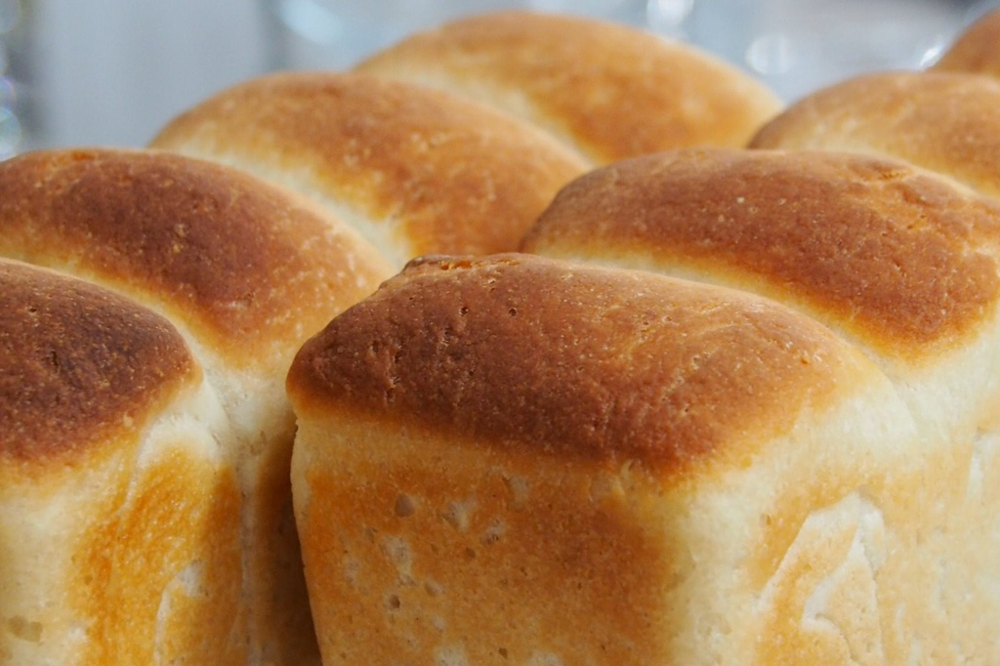
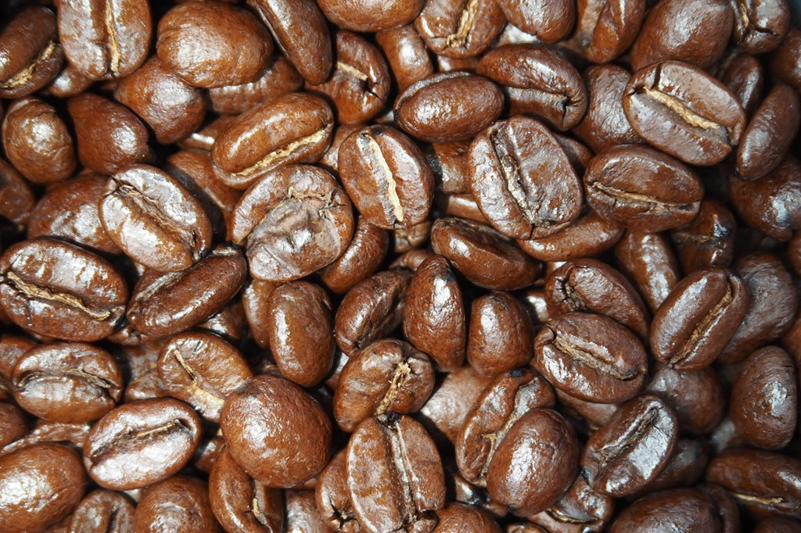

Bread & Sweets
米粉だからではなく
おいしいから選ばれるものを。
食の制限がある人もない人も、同じテーブルで笑顔になれるものを届けたい。そんな想いから、mame to komeの米粉パン・スイーツは始まりました。
グルテンフリーという枠にとらわれず、毎日の中で自然と手に取りたくなる存在を目指して。米粉ならではのやさしさを活かしながら、味わいや食感にも妥協せず焼き上げています。
毎日の中で自然と手に取りたくなる、「おいしいから、また食べたい」と思える、やさしい味わいを目指しています。

Collaboration
それぞれの想いを、
ひとつのおいしさに。
自社商品にとどまらず、お店や作り手の想いを一緒にかたちにするオリジナル商品の企画・製造にも取り組んでいます。
FLAT COFFEE ROASTERSの限定焼き菓子や、山田屋茶舗の抹茶と季節のくだものを合わせたスイーツなど。素材、空間、その先にいるお客様まで想像してレシピを組み立てています。
ただ商品をお渡しするのではなく、それぞれのお店でしか味わえない特別な体験を、共に考え、形にしていくことを大切にしています。

Coffee Beans
もっと普通に、
おいしいコーヒーがある毎日へ。
mame to komeやKIMMY’S COFFEEで使用する豆は、オーストラリア修業時代の友人が営む「NOG COFFEE ROASTERS」に焙煎をお願いしています。
「美味しいコーヒーをもっと普通に」という彼らの想いに共感し、特別な日だけでなく、毎日の暮らしの中で当たり前に楽しめるおいしい一杯をお届けしたいと考えています。
そんな日常に寄り添う一杯として、私たちの店やお客様に合わせてつくった3種類のオリジナルブレンドを、メニューやシーンに合わせて届けています。
そして、私たちが目指す日常の一杯を自らの手でつくるため、2027年夏頃の自社焙煎機導入を目標に少しずつ準備を進めています。